Okuizumo, Shimane: things to do, food and stays
Okuizumo · Shimane
Okuizumo
Highlighted on the Shimane map.
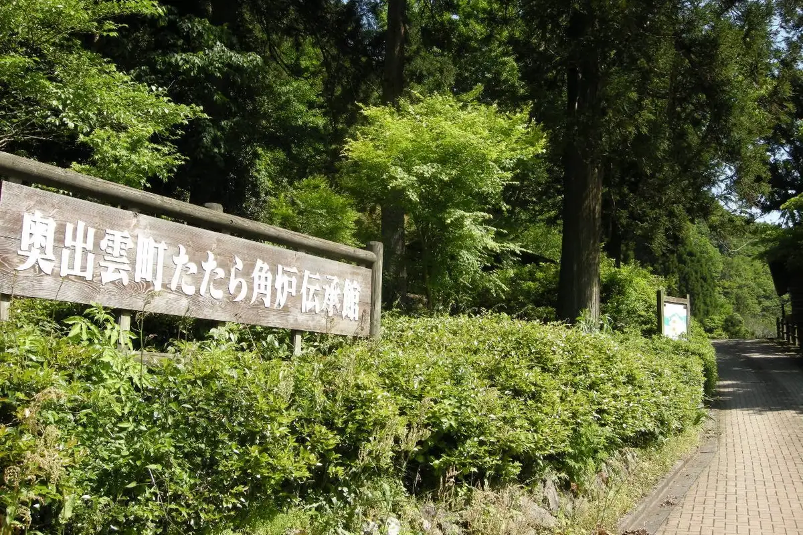
Stay
亀嵩温泉 玉峰山荘
Kamedake Onsen Gyokuho Sanso
Inn at Kamedake Onsen in Kamedake, Okuizumo.
奥出雲町サイクリングターミナル
Okuizumo Machi Saikuringutaminaru
Inn in Mitsunari, Okuizumo; 3-minute walk from Ryoritomotenashigajiman! Station.
奥出雲多根自然博物館
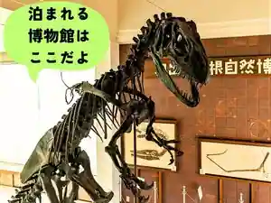
Okuizumo Tane Shizenhakubutsukan
浪花旅館
Naniwa Ryokan
Dining
純そば 一風庵
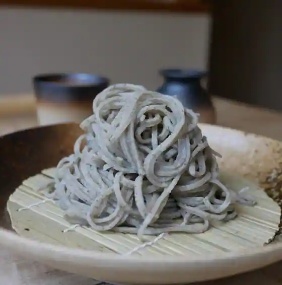
Jun Soba Ippu Iori
亀嵩駅の手打そば 扇屋
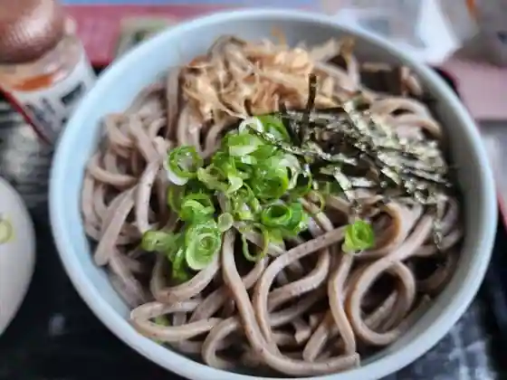
Kamedake Eki No Teuchi Soba Ogiya
姫のそば ゆかり庵
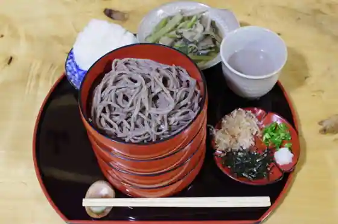
Hime Nosoba Yukari Iori
山県そば
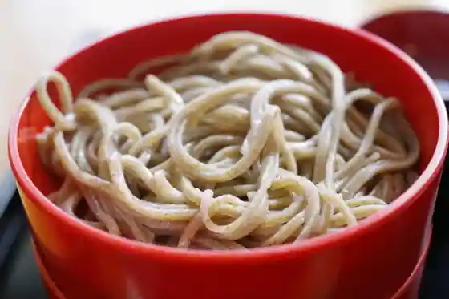
Yamagata Soba
松葉屋 横田本店
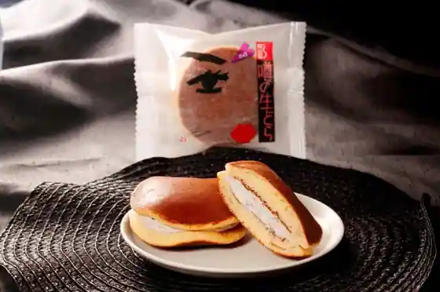
Matsuba Ya Yokota Hon
本場手打ち 八川そば
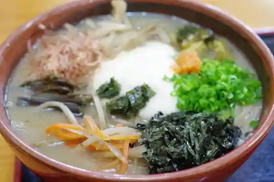
Honba Teuchi Chi Hachi Kawa Soba
鬼蕎麦
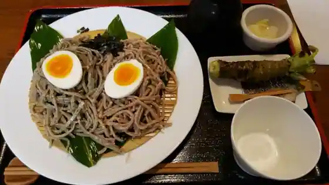
Oni Soba
仁多米食堂
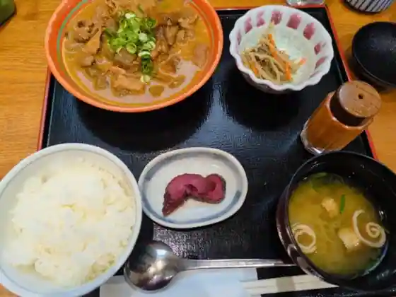
Nita Kome Shokudo
道の駅 奥出雲おろちループ
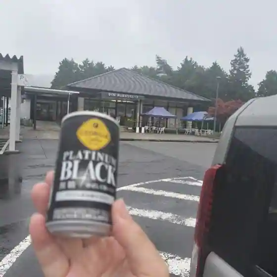
Michi No Eki Okuizumo Orochi Rupu
ピコピコ
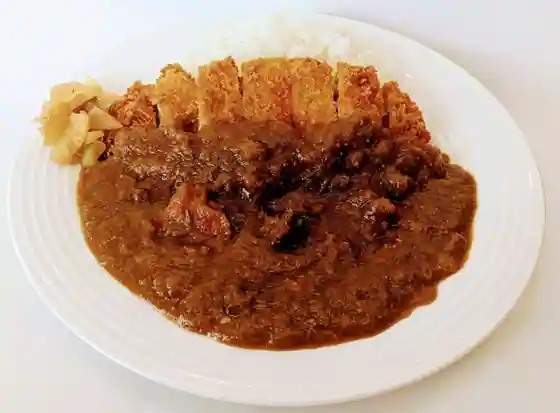
Pikopiko
肉料理 たたら
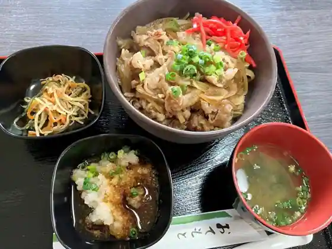
Nikuryori Tatara
酒蔵奥出雲交流館
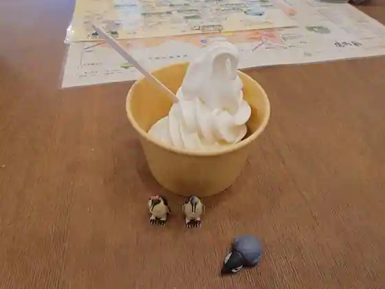
Shuzo Okuizumo Koryu Kan
民宿 たなべ
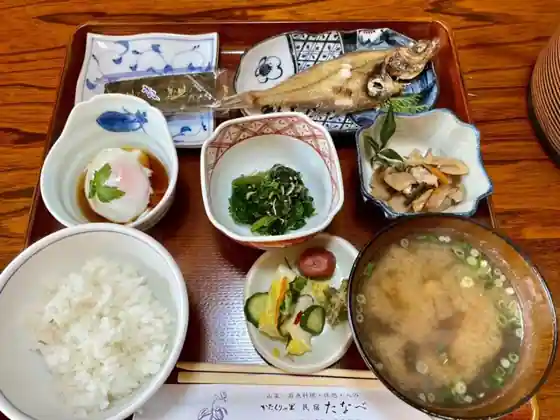
Minshuku Tanabe
高原そば 壱心
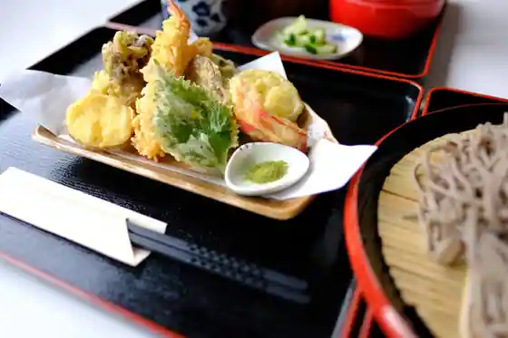
Kogen Soba Isshin
味処 玉峰
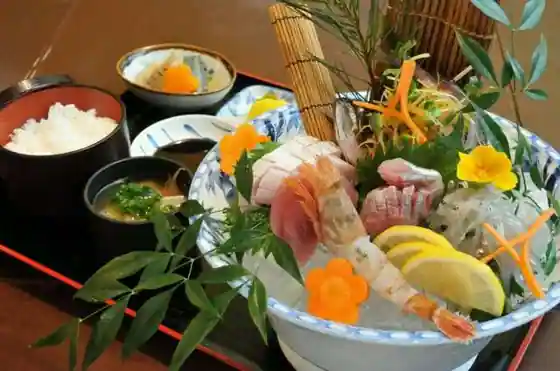
Ajidokoro Gyokuho
たち花
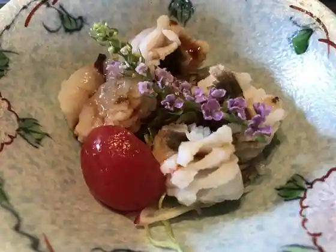
Tachi Hana
延命の里
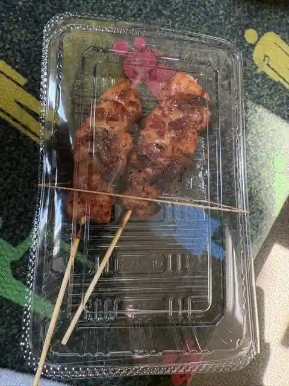
Enmei No Sato
欅
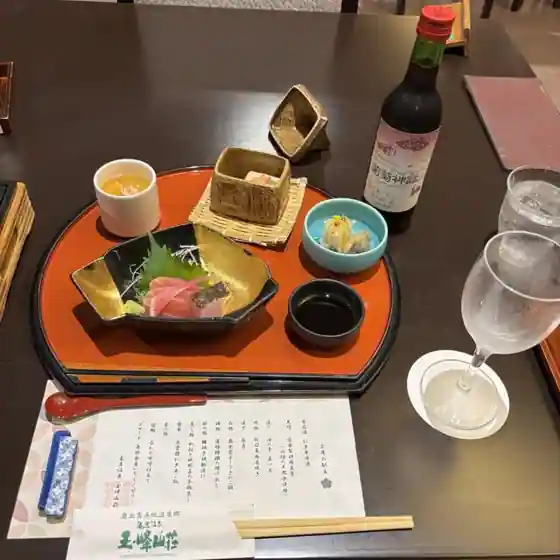
Keyaki
焚菜
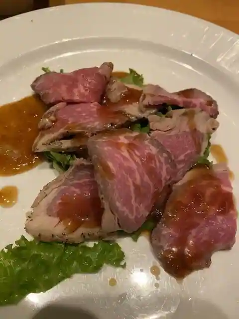
Fun Na
古民家そば たたらのいえ 島根奥出雲店
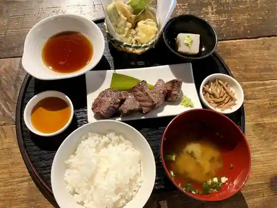
Ko Minka Soba Tataranoie Shimane Okuizumo
暖々
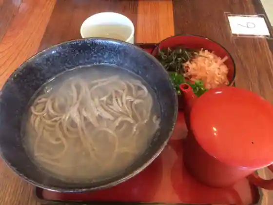
Dan (Kurikaesi)
吾妻そば 本店
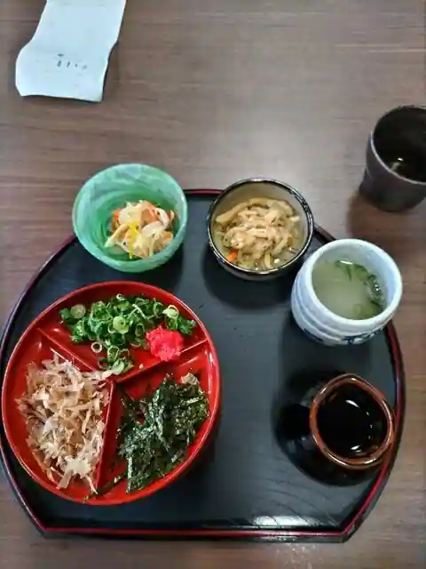
Azuma Soba Hon
横田手打ちそば あさひ亭
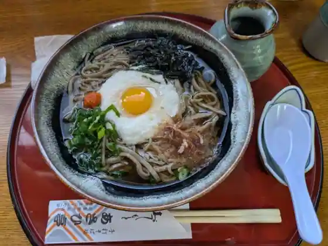
Yokota Teuchi Chisoba Asahi Tei
Sights
Oni no Shita Shin
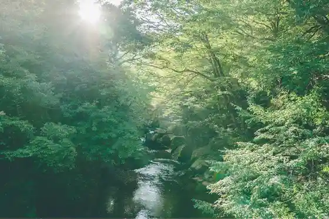
Kabe Ya Shusei Kan Sakurai Ie Jutaku to Garden
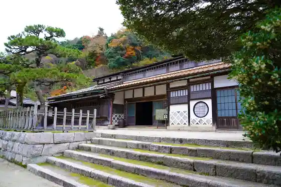
Okuizumo Tatarato Token Kan
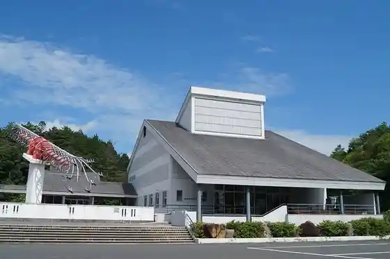
Mitsui Nohara Ski Area
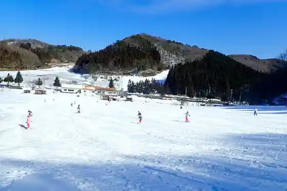
Okuizumo Orochi Rupu
Nichi Katana Tamota Tara
Hi no Ue Onsen
Itohara Memorial Museum
Kamedake Onsen Gyokuho Sanso
Okuizumo Tane Shizen Museum
Roadside Station (Okuizumo Orochi Rupu)
Sa Shiro Onsen Choja Baths
Kingen Tera
Gyokuho Yama Forest Park Rinkan Campground
Katakuri Village Minshuku Tanabe (Hi no Ue Onsen)
Suna no Utsuwa Kinenhi
Roadside Station Shuzo Okuizumo Koryu Kan
Fune Toriyama
(Issha) Okuizumo Tourism Association
Unshu Soroban Dento Sangyo Hall (Soroban Museum)
Ineda Shrine
Hi no Ue So
Ohara Nitta
Misawa Castle Ruins
Ogiya Soba
Mitsui Nohara
Enmei Mizu
Hane Nai Tani Kozan Kanna Nagashi Homba Setsubi
Maitake Okuizumo
Tatara Kakuro Densho Kan
Ten Murakumo no Tsurugi Shutsu Ken no Hi
Yokota Komyunitei Center
Boku Kura Garden
Highlands Soba Isshin
Okuizumo Tetsu no Chokoku Art Museum
Takezaki no Katsura
Bagahausu Pikopiko
Gyokuho Yama
Iga Taki Shrine
Torikami Falls
Ai Kawa Dam
Sa Shiro Onsen
Fujigase Castle Ruins
Toto Falls
Okuizumo Saikuringutaminaru
Gyokuho Yama no Taki Gun
Kabe Ya Shusei Kan no Autumn Leaves
Okuizumo Wairudoguranpingu
Yokota Hachiman Shrine
Kagechi Tatara Ato
Mitsu Ike
Egoma Oiru
Okuizumo Town Hall